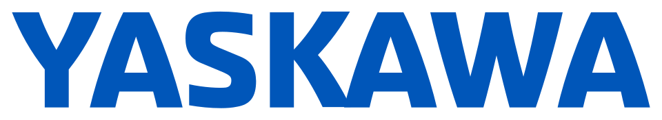

Yaskawa Electric Corporation
Yaskawa Electric Corporation은 서보, 모션 컨트롤러, AC 모터 드라이브, 스위치, 산업용 로봇을 제조하는 일본 기업이다. 1915년에 설립되었고 본사는 기타큐슈시에 있다.
최종 업데이트

Yaskawa Electric Corporation는 어떤 브랜드인가
Yaskawa는 서보, 모션 컨트롤러, AC 모터 드라이브, 스위치, 산업용 로봇을 만드는 일본의 제조업체이다. Motoman 로봇은 용접, 포장, 조립, 코팅, 절단, 자재 취급 등 일반 자동화에 쓰이는 대형 산업용 로봇이다.
회사는 1915년에 설립되었으며 본사는 일본 후쿠오카현 기타큐슈시에 있다. 도쿄증권거래소와 후쿠오카증권거래소에 상장되어 있고 닛케이 225 주가지수의 구성 종목이다.
전 세계 29개국에 사업 거점을 두고 있으며, 일본을 포함한 12개국에 생산 기지를 운영한다. 전 세계에 자회사 81개와 관련 회사 24개를 두고 있다.
Yaskawa Electric Corporation는 어떻게 시작되고 성장했나
Yaskawa는 1915년에 설립된 일본 기업이며 본사는 후쿠오카현 기타큐슈시에 있다. 기타큐슈시의 본사 건물은 1954년에 미국 건축가 Antonin Raymond가 설계했다.
1969년에는 'Mechatronics'라는 용어를 상표로 출원했고, 이 상표는 1972년에 승인되었다. 회사는 이후 전 세계 29개국에 사업 거점을 두는 규모로 성장했으며, 일본을 포함한 12개국에 생산 기지를 갖추고 있다.
도쿄증권거래소와 후쿠오카증권거래소에 상장되어 있으며 닛케이 225 지수에 포함된다.
Yaskawa Electric Corporation의 브랜드 아이덴티티는 무엇인가
서보, 모션 컨트롤러, AC 드라이브와 Motoman 산업용 로봇을 함께 다루고, 1969년에 'Mechatronics' 상표를 출원한 일본의 자동화 제조업체이다.
Yaskawa Electric Corporation의 대표 제품과 서비스는 무엇인가
서보 드라이브와 머신 컨트롤러, AC 드라이브, 로봇이 주요 제품군이다. 로봇 분야에서는 SCARA(Selective Compliance Assembly Robot Arm)와 협동 로봇 등 다양한 산업 공정용 산업용 로봇을 제공한다.
시스템 엔지니어링은 철강 플랜트, 사회 시스템(물 순환, 에너지 절약, 방재, 메가솔라 시스템, 하이브리드 발전 시스템, 에너지 관리 시스템), 환경·에너지(발전 설비), 전력(배전 설비), 산업용 전자, 정보 기술, 에너지 절약·창출 설비 분야에 쓰인다. Motoman 로봇은 용접, 포장, 조립, 코팅, 절단, 자재 취급 등에 쓰이는 대형 산업용 로봇이다.
Yaskawa Electric Corporation는 지금 어떤 상태인가
현재 29개국에 사업 거점을, 일본을 포함한 12개국에 생산 기지를 두고 있다. 자회사 81개와 관련 회사 24개가 있으며 Yaskawa America, Inc., Yaskawa Europe GmbH 등이 포함된다.
2026년 7월에는 Fujitsu가 주도하고 FANUC, Kawasaki Heavy Industries가 참여한 구상에 Yaskawa도 참여해 Nvidia 기술을 활용한 피지컬 AI용 협업 제어 플랫폼 개발에 나섰다. 초기 단계는 같은 해 후반에 시작할 예정이라고 밝혔다.
Yaskawa Electric Corporation 로고는 어떻게 변해왔나
자주 묻는 질문
Yaskawa Electric Corporation는 어느 나라 브랜드인가요?
Yaskawa Electric Corporation는 일본의 에너지·산업재 브랜드입니다.
Yaskawa Electric Corporation는 언제 설립되었나요?
Yaskawa Electric Corporation는 1915년 설립되었습니다.
Yaskawa Electric Corporation의 브랜드 아이덴티티는 무엇인가요?
서보, 모션 컨트롤러, AC 드라이브와 Motoman 산업용 로봇을 함께 다루고, 1969년에 'Mechatronics' 상표를 출원한 일본의 자동화 제조업체이다.
Yaskawa Electric Corporation의 대표 제품은 무엇인가요?
서보 드라이브와 머신 컨트롤러, AC 드라이브, 로봇이 주요 제품군이다.
Yaskawa Electric Corporation는 현재 어떤 상태인가요?
현재 29개국에 사업 거점을, 일본을 포함한 12개국에 생산 기지를 두고 있다.
Yaskawa Electric Corporation의 본사는 어디에 있나요?
Yaskawa Electric Corporation의 본사는 기타큐슈시에 있습니다(위키데이터 기준).
Yaskawa Electric Corporation의 공식 웹사이트는 어디인가요?
Yaskawa Electric Corporation의 공식 웹사이트는 http://www.yaskawa.co.jp/ 입니다.
출처와 검증
Yaskawa Electric Corporation 관련 참고: 공식 웹사이트 · 위키데이터 Q2620239 · 영어 위키백과. 브랜드명은 한글과 원어를 함께 표기하되 데이터에 없는 표기는 만들지 않습니다. 기원 국가·설립연도는 검수된 정의문에서 확인된 값을 우선하고, 없을 때만 공식 웹사이트 URL이 일치하는 위키데이터 개체의 값을 씁니다. 탄생일의 월·일은 위키데이터, 위키백과 정보상자, 본문 가운데 같은 연월로 확인되는 값만 싣고, 출처끼리 다르면 싣지 않습니다. 위키데이터 값은 2026-11-15 기준입니다.